Dos viajes, una costa en cada uno: Los Ángeles en diciembre de 2024 y Nueva York en enero de 2025. Elige uno para ver el relato día a día, los mapas, los kilómetros y las velocidades.
Cuatro días entre Dallas y Los Ángeles: escala en Texas, una tarde de dinosaurios, una jornada de trabajo por el Inland Empire, Universal Studios de punta a punta y un último día de Hollywood, guitarras y luces de Navidad.
Fechas y horas tal como las registró el teléfono en hora local. Distancias por tierra en línea recta entre fotos consecutivas con GPS; por carretera fueron bastante más.
La ruta
El vuelo de ida, a escala continental, y luego cada parada en Los Ángeles según el GPS de las fotos. Cada punto es una parada de la bitácora, con el color del día.
En avión
En tierra · Gran Los Ángeles e Inland Empire
Zoom · Los Ángeles central
Perfil de altitud
La altitud GPS de cada foto, en orden cronológico. Pasa el cursor para ver la foto. El pico es Redlands, a los pies de los montes de San Bernardino; el punto más bajo, Carson, casi al nivel del mar.
Cuánto caminé, cuánto en auto y a qué altura
Calculado con el GPS de las fotos, en línea recta entre una foto y la siguiente. Lo que se camina sin sacar fotos no queda registrado, así que las cifras a pie son un mínimo.
A pie≥ 12,9 km· ≈ 7 h 43 min
Lun 2: museo y Exposition Park, 2,2 km en 1 h 27 min. Mié 4: Universal Studios, 4,2 km en 3 h 53 min de recorrido entre fotos, sin contar filas largas ni el tranvía. Jue 5: Hollywood, Sunset, Wilshire y The Grove, 6,5 km en 2 h 23 min. El tiempo incluye detenciones para mirar y fotografiar.
En auto≈ 293 km· ruta del 3 dic: 6 h 31 min
En línea recta; por carretera serían unos 380 km. La mayor parte es la ruta de trabajo del martes 3: Koreatown → Redlands → San Bernardino → Fontana → Jurupa Valley → Carson → Koreatown (≈ 248 km). Las fotos no permiten medir el tiempo total en auto: esa jornada tomó 6 h 31 min entre la primera tienda (08:42) y Carson (15:13), con paradas incluidas.
Lugar más alto502 m· Redlands
Tienda Rocket en el extremo este de Redlands, martes 3 a las 08:42, al pie de los montes de San Bernardino. El más bajo fue Carson, a 7,5 m. En Universal, la zona de Hogwarts llega a unos 250 m.
Temperaturas mínimas y máximas
Por día y por lugar. Del verano de Santiago al otoño suave de California: ningún día bajó de 0 °C. La mínima más baja fue la de Dallas en la escala (3 °C) y, ya en California, la del jueves 5 en Hollywood (5 °C).
Dom 1 dic Santiago (salida)
8°23°
Lun 2 dic Dallas–Fort Worth
3°17°
Lun 2 dic Centro de Los Ángeles
10°23°
Mar 3 dic Inland Empire (Redlands–San Bernardino)
6°22°
Mar 3 dic Centro de Los Ángeles
11°22°
Mié 4 dic Universal City · Hollywood
9°18°
Jue 5 dic Hollywood
5°22°
Jue 5 dic Centro de Los Ángeles
7°21°
0°10°20°30°
Fuente: Open-Meteo, API de datos históricos (reanálisis ERA5, temperatura a 2 m, día en hora local). Es un modelo en cuadrícula de unos 10 a 25 km, así que puede diferir 1 o 2 °C de la estación más cercana.
Velocidades
Las fotos no guardan la velocidad del auto o del avión, solo dónde y cuándo se tomaron. Por eso el promedio es la distancia en línea recta entre dos fotos dividida por el tiempo entre ellas: incluye detenciones y es un mínimo. La mayor velocidad anotada en una foto es 9,4 km/h (IMG_6103, dentro de un auto, 2 dic 16:46). La máxima real de los tramos no quedó registrada.
Tramo
Medio
Distancia
Tiempo
Promedio
Máxima
Terminal de DFW → Exposition Park (2 dic)
Avión + traslado, puerta a puerta
1.997 km
6 h 53 min
≈ 290 km/h
no registrada
Exposition Park → Koreatown (2 dic)
Auto
4,4 km
34 min
7,7 km/h
—
Redlands este → Redlands (3 dic)
Auto
6,4 km
18 min
22 km/h
—
Redlands → San Bernardino
Auto
11,6 km
33 min
21 km/h
—
San Bernardino → Fontana
Auto
20,2 km
59 min
21 km/h
—
Fontana → Jurupa Valley
Auto
5,3 km
19 min
17 km/h
—
Jurupa Valley → Carson (incluye la pausa del mediodía)
Bitácora de viaje · fotos de iCloud y Timeline de Google Maps
Nueva York y Long Island, enero 2025
Una semana de frío ártico: un día completo por Manhattan, del Met y Central Park al Puente de Brooklyn y al Museo de Historia Natural; cuatro días de trabajo en Long Island, con un turno de noche y una hora entre aviones de la Segunda Guerra; y una tarde en Brooklyn antes de volver.
16.500km en avión (ida y vuelta)
≈ 286km por tierra en Nueva York
244fotos
22paradas
8días (5 al 12 de enero)
11,3 kmen metro, el lunes 6
≈ 8,4 kma pie
107 km/hvelocidad máxima en auto
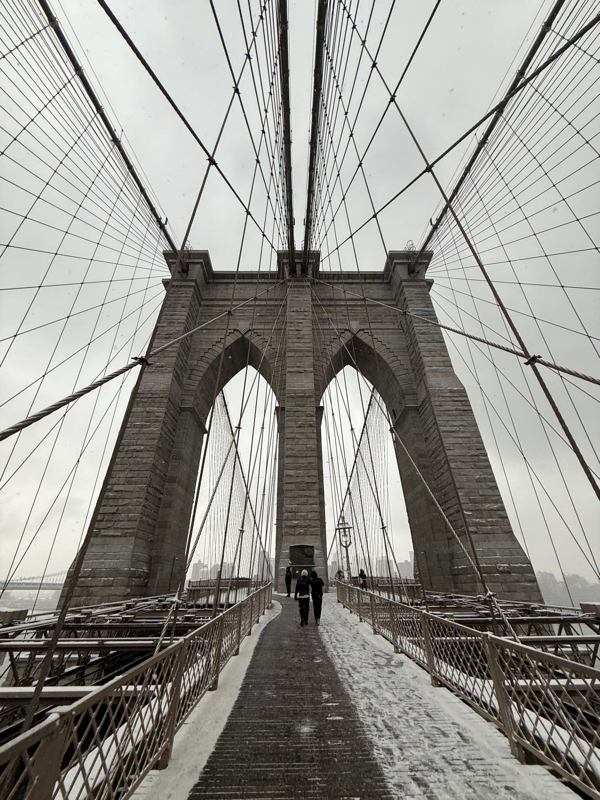
La ruta
Cada número es una parada, en orden del 1 al 22. El color indica el día.
Nueva York y Long Island
En avión
Zoom · el lunes 6 en Manhattan
Tramo
Cómo
km
Santiago → Nueva York
Avión, noche del 5 al 6 de enero
8.238
Nueva York (JFK) → Santiago
Avión, 10 al 12 de enero (distancia del Timeline)
8.262
Manhattan
Metro (2 viajes)
11
Manhattan y Brooklyn
A pie
≈ 8
Manhattan ↔ Long Island ↔ Bay Shore ↔ Brooklyn ↔ JFK
Auto (en línea recta y distancias del Timeline)
≈ 267
Total
16.786
Cuánto caminé, cuánto en auto y a qué altura
A pie≈ 8,4 km· ≈ 4 h
5,1 km medidos por el Timeline en 7 tramos (Manhattan el lunes 6 y Carroll Gardens el viernes 10), más unos 3,3 km en línea recta la mañana del lunes 6, del Met a Times Square pasando por Central Park y la Quinta Avenida, que salen de las fotos porque el Timeline no los registró. No cuenta lo caminado dentro de los museos, que fue bastante: hora y media en el de Historia Natural y una hora en el de aviones.
En metro11,3 km· 1 h 19 min
Dos viajes el lunes 6: de la calle 34 a Lower Manhattan (30 min) y de South Ferry al Upper West Side, junto al Museo de Historia Natural (49 min), con esperas y transbordos.
En auto≈ 267 km· ≈ 9 h
7 h 10 min medidas con el GPS (Manhattan → Long Island, la vuelta del martes en la noche, Long Island → Manhattan → Brooklyn → JFK) y unas 2 h más estimadas para las idas y vueltas a Bay Shore, que el Timeline registra sin hora de salida.
Lugar más alto≈ 61 m· Puente de Brooklyn
Altitud GPS de las fotos (margen de unos ±10 m), tomada sobre el paseo peatonal del puente. Las fotos del Empire State son desde la calle, así que no hay registro de una subida al mirador. En Long Island, lo más alto fue la base en la zona de Melville (unos 41 m), a pocos kilómetros de Jayne's Hill, el punto más alto de la isla (unos 122 m).
Temperaturas mínimas y máximas
Por día y por lugar. Se sale de Santiago con 29 °C y en Nueva York la máxima no superó los 0 °C entre el lunes 6 y el jueves 9: el día más frío fue el martes 7 en Long Island, con −8 °C de mínima. Azul: días con máxima de 5 °C o menos.
Dom 5 ene Santiago
18°29°
Lun 6 ene Manhattan
−7°−2°
Mar 7 ene Long Island (Bay Shore)
−8°−2°
Mié 8 ene Long Island (Bay Shore)
−6°−2°
Jue 9 ene Long Island (Bay Shore · Farmingdale)
−6°−1°
Vie 10 ene Brooklyn · Manhattan
−4°3°
Vie 10 ene Long Island
−3°4°
Dom 12 ene Santiago
18°26°
−10°0°10°20°30°
Fuente: Open-Meteo, API de datos históricos (reanálisis ERA5, temperatura a 2 m, día en hora local). Es un modelo en cuadrícula de unos 10 a 25 km, así que puede diferir 1 o 2 °C de la estación más cercana.
Velocidades
Promedio = distancia recorrida según el GPS dividida por el tiempo del tramo. Máxima = la mayor velocidad sostenida en al menos 4 minutos entre puntos del Timeline, para no contar saltos del GPS. En los vuelos el Timeline solo tiene el punto de salida y el de llegada, así que el promedio es «puerta a puerta» e incluye esperas, migración y escalas.
Tramo
Medio
Distancia
Tiempo
Promedio
Máxima
Santiago → Times Square
Avión + traslado, 5–6 ene
8.252 km
16 h 32 min
≈ 500 km/h
no registrada
Times Square → Empire State
A pie
1,1 km
18 min
3,6 km/h
—
Calle 34 → Lower Manhattan
Metro
4,3 km
30 min
8,6 km/h
—
WTC → South Ferry
A pie
0,9 km
23 min
2,4 km/h
—
South Ferry → Upper West Side (museo)
Metro
7,0 km
49 min
8,5 km/h
—
Central Park → Lexington Ave
A pie
1,2 km
26 min
2,7 km/h
—
Manhattan → Long Island (6 ene)
Auto
49,8 km
1 h 6 min
45 km/h
≈ 106 km/h
Brentwood → base (7 ene, noche)
Auto
22,3 km
15 min
89 km/h
≈ 107 km/h
Long Island → Upper West Side (10 ene)
Auto
55,3 km
1 h 48 min
31 km/h
≈ 89 km/h
Brooklyn → JFK (10 ene)
Auto
39,9 km
2 h 8 min
19 km/h
≈ 47 km/h
JFK → casa en Santiago
Avión + traslado, 10–12 ene
8.262 km
38 h 43 min
≈ 213 km/h
no registrada
1
Domingo 5 de enero de 2025
Salida desde Santiago
Día del año5 de 365
Clima y solVerano en Santiago. Sale el sol 06:39 · se pone 20:56.
Temperatura mín / máxSantiago: 18 / 29 °C
Fotossin fotos
Hora localUTC−3
115:45
Sale de casa
Santiago, Chile · GPS -33.5751, -70.5413
Inicio del viaje, un domingo de verano: 29 °C de máxima en Santiago. La mínima del día siguiente en Manhattan fue de −7 °C, unos 36 °C de diferencia.
219:44–21:10
Aeropuerto de Santiago (SCL)
llegada: auto
Pudahuel, Santiago · GPS -33.3995, -70.7900
Las fotos del cambio de moneda en el aeropuerto son de las 19:44, y el Timeline marca el aeropuerto a las 21:10. Después, el vuelo nocturno hacia Nueva York: unos 8.240 km en línea recta.
2
Lunes 6 de enero de 2025
Un día a pie y en metro por Manhattan
Día del año6 de 365
Clima y solFrío ártico, con máxima bajo cero y viento. Sale el sol 07:20 · se pone 16:42.
Temperatura mín / máxManhattan: −7 / −2 °C
Fotos173
Hora localUTC−5 (2 horas menos que Chile)
309:57–10:04
Museo Metropolitano de Arte y Quinta Avenida
6 fotos · llegada: vuelo + traslado
Upper East Side · Milla de los Museos · GPS 40.7787, -73.9611
Primeras fotos en Nueva York, a primera hora y con nieve en las veredas. El Met se fundó en 1870 y su fachada sobre la Quinta Avenida, de estilo Beaux-Arts, se inauguró en 1902. El Timeline no registró esta mañana: su primer punto en Manhattan es de las 11:42, así que este tramo sale de las fotos.
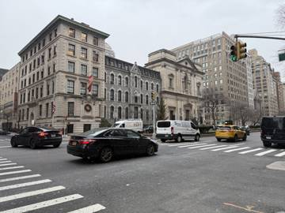
09:57 · 30 m
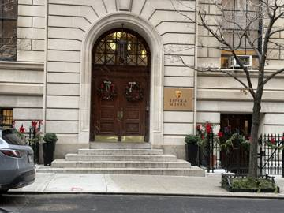
09:58 · 29 m10:02 · 28 m
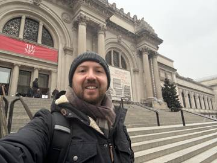
10:03 · 29 m
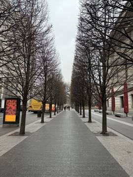
10:04 · 27 m10:04 · 27 m
410:16–10:42
Central Park
9 fotos · llegada: a pie
Lado este del parque, hacia el sur · GPS 40.7698, -73.9705
Coches de caballos, arcos y puentes de piedra entre árboles sin hojas. Central Park se diseñó en 1858 (Frederick Law Olmsted y Calvert Vaux, autor también de la mayoría de sus puentes) y tiene unas 341 hectáreas.
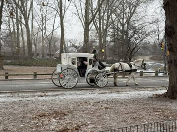
10:16 · 28 m
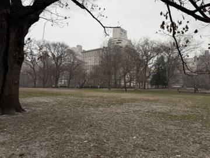
10:17 · 29 m
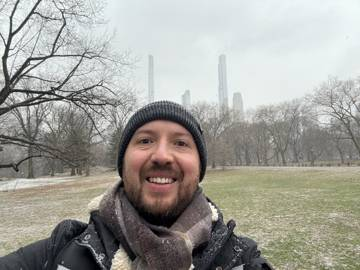
10:19 · 24 m
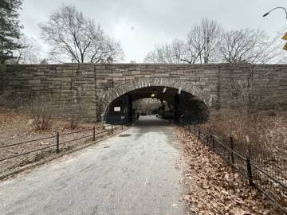
10:23 · 17 m10:23 · 19 m
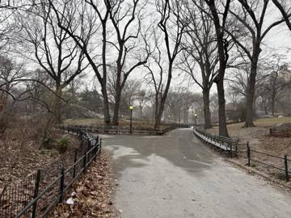
10:23 · 19 m
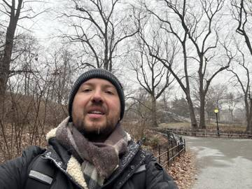
10:24 · 18 m
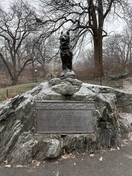
10:28 · 22 m10:42 · 18 m
510:55–11:19
Quinta Avenida, San Patricio y Rockefeller Center
14 fotos · llegada: a pie · ≈ 1,5 km
Midtown, Manhattan · GPS 40.7587, -73.9787
Bajando por la Quinta Avenida: la tienda de Louis Vuitton forrada con un baúl gigante mientras la remodelan, la catedral de San Patricio (neogótica, abierta en 1879), la estatua de Atlas (1937) y el árbol de Navidad del Rockefeller Center, que todavía seguía en pie el 6 de enero.
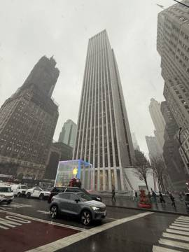
10:55 · 16 m
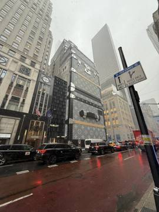
10:56 · 16 m
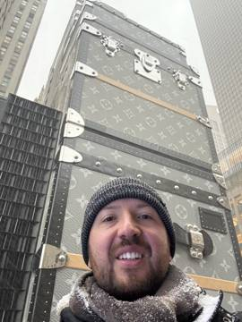
10:56 · 17 m
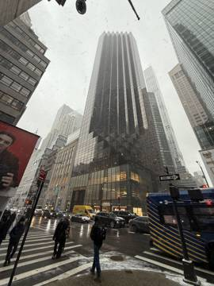
11:01 · 19 m
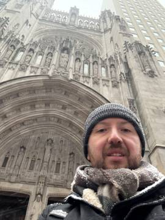
11:04 · 31 m
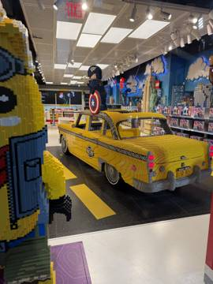
11:08 · 23 m11:09 · 24 m
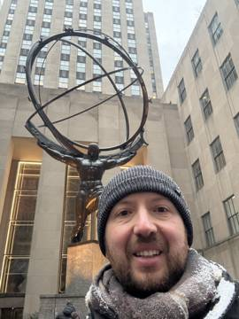
11:09 · 24 m
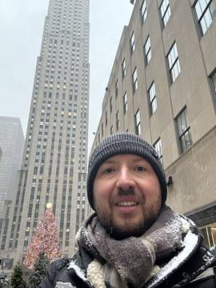
11:11 · 23 m
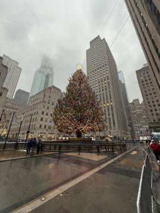
11:15 · 14 m
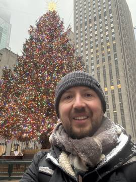
11:16 · 22 m
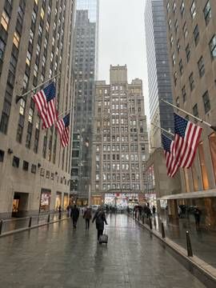
11:18 · 31 m
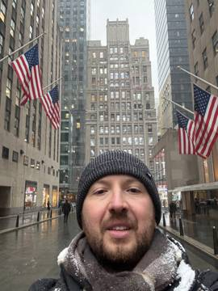
11:18 · 22 m11:19 · 21 m
611:30–11:43
Times Square
9 fotos · llegada: a pie
Midtown, Manhattan · GPS 40.7567, -73.9859
La plaza lleva ese nombre desde 1904, cuando The New York Times trasladó ahí su sede. Pantallas encendidas a mediodía y una bandera gigante de luces.
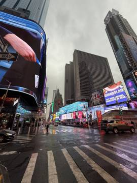
11:30 · 17 m
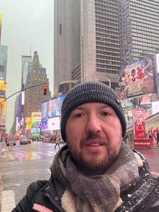
11:31 · 17 m
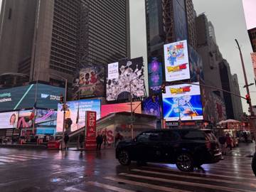
11:31 · 16 m
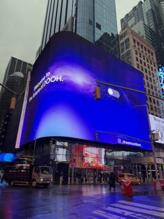
11:32 · 34 m
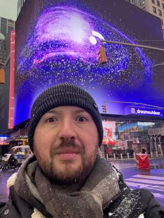
11:32 · 16 m
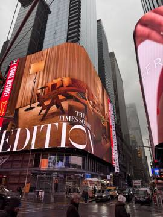
11:33 · 18 m
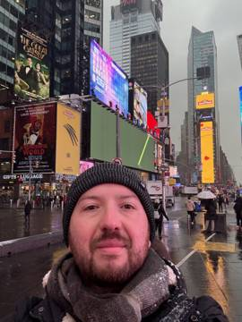
11:35 · 16 m
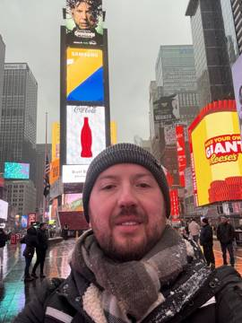
11:36 · 35 m
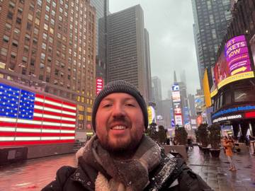
11:43 · 17 m
711:59–12:44
Empire State Building
3 fotos · llegada: a pie · 1,1 km
Quinta Avenida y calle 34 · GPS 40.7484, -73.9857
Inaugurado en 1931, fue el edificio más alto del mundo durante casi 40 años. El Timeline lo anota 44 minutos.
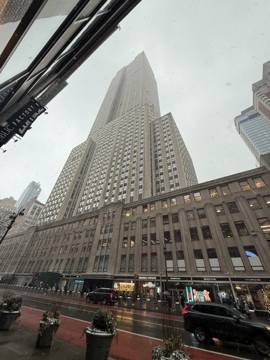
11:59 · 17 m
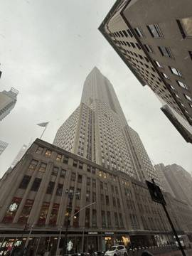
12:01 · 17 m
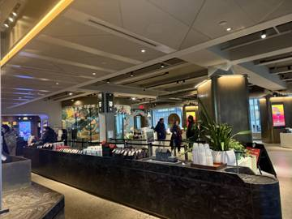
12:05 · 36 m
813:10–13:30
Puente de Brooklyn
16 fotos · llegada: metro · 4,3 km
City Hall Park → Puente de Brooklyn · GPS 40.7061, -73.9969
Se llega por City Hall Park, nevado. El puente se abrió en 1883 y fue el primer gran puente colgante con cables de acero (John y Washington Roebling). Las fotos sobre el paseo peatonal marcan unos 61 m de altitud GPS, la más alta del viaje en Nueva York.
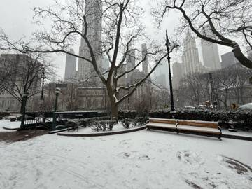
13:10 · 15 m
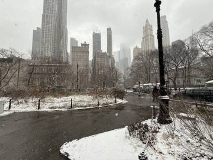
13:12 · 15 m
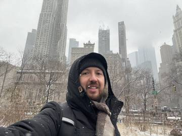
13:12 · 13 m
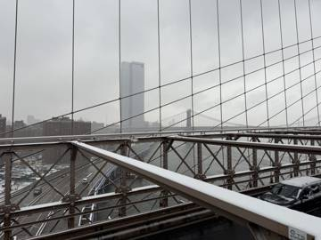
13:20 · 38 m
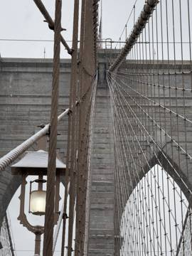
13:21 · 36 m
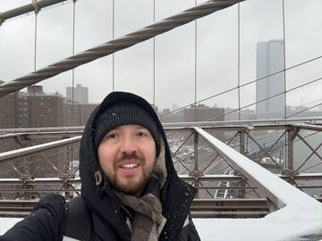
13:21 · 37 m
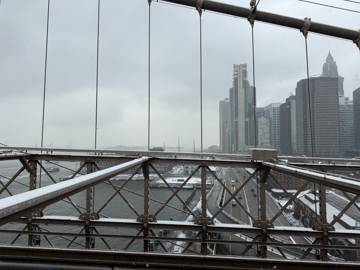
13:21 · 40 m
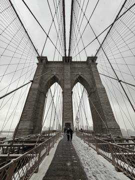
13:23 · 5 m13:23 · 3 m
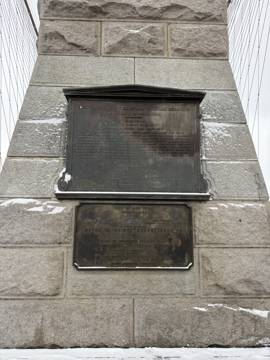
13:23 · 3 m
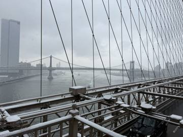
13:24 · 61 m
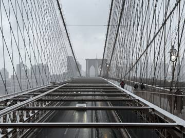
13:24 · 2 m
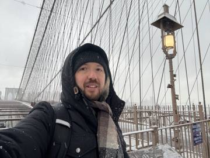
13:24 · 2 m13:24 · 2 m
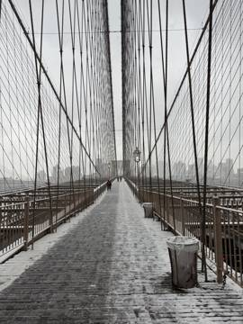
13:24 · 2 m13:25 · 2 m
913:35–14:21
St. Paul's Chapel, Oculus y Memorial del 11-S
5 fotos · llegada: a pie
Financial District · GPS 40.7115, -74.0098
El cementerio nevado de St. Paul's Chapel (1766, la iglesia más antigua que sigue en pie en Manhattan), el Oculus de Santiago Calatrava (2016) y las dos piscinas del memorial, sobre la huella de las Torres Gemelas, abiertas el 11 de septiembre de 2011. Al lado, el One WTC (541 m, 1.776 pies).
Punta sur de la isla, con la Estatua de la Libertad a lo lejos y el río Hudson detrás. Desde aquí, metro hacia el norte.
14:29 · 3 m14:31 · 2 m14:37 · 2 m14:40 · 2 m
1115:45–17:17
Museo Americano de Historia Natural
107 fotos · llegada: metro
Central Park West y calle 79 · GPS 40.7813, -73.9740
La visita más larga del día y la con más fotos. El museo se fundó en 1869. Arriba, las salas de fósiles: el T. rex, los saurópodos, los ornitisquios con cresta y armadura, y los mamíferos de la era del hielo (mamut, alce irlandés, gliptodonte). Abajo, la ballena azul de 29 m de la sala de vida oceánica, el tigre de la sala de mamíferos de Asia, un moái de Isla de Pascua, la cabeza olmeca y la Piedra del Sol azteca. La salida es por la rotonda Theodore Roosevelt, con el Barosaurus que defiende a su cría de un Allosaurus, ya de noche (el sol se puso a las 16:42).
Upper West Side → Upper East Side · GPS 40.7790, -73.9655
Desde el museo, a pie por el parque ya oscuro hasta Lexington Avenue.
1318:53
Llegada a Long Island
llegada: auto · ≈ 50 km
Zona Melville–Plainview, límite Nassau–Suffolk · GPS 40.7846, -73.4449
Viaje en auto por Queens y la Long Island Expressway hasta la base de la semana: 50 km en 66 minutos, con tramos a más de 100 km/h.
3
Martes 7 de enero de 2025
Trabajo en Bay Shore
Día del año7 de 365
Clima y solOla de frío: sensación térmica nocturna de −17 a −10 °C en Nueva York y Long Island.
Temperatura mín / máxLong Island (Bay Shore): −8 / −2 °C
Fotos20
Hora localUTC−5
1409:23–15:57
Sitio de trabajo, Bay Shore
20 fotos · llegada: auto · ≈ 18 km
Bay Shore / Islip, Suffolk · GPS 40.7376, -73.2467
Primer día de trabajo: una tienda por departamentos y su sala de máquinas, con enfriadores York, tableros de control y los controladores Honeywell y Loytec que llegaron para instalar. El Timeline casi no registra movimiento ese día; las fotos, con GPS, lo ubican completo en el sitio.
Salida en la noche hacia el sur de Suffolk (con helada y viento, la sensación térmica nocturna estaba entre −17 y −10 °C). El regreso a la base es el tramo más rápido del viaje: 22 km en 15 minutos, con un máximo cercano a 107 km/h.
4
Miércoles 8 de enero de 2025
Segundo día en Bay Shore
Día del año8 de 365
Clima y solFrío y viento; enero de 2025 terminó siendo el más seco registrado en Central Park.
Temperatura mín / máxLong Island (Bay Shore): −6 / −2 °C
Fotos3
Hora localUTC−5
1609:45–18:31
Sitio de trabajo, Bay Shore
3 fotos · llegada: auto · ≈ 18 km
Bay Shore / Islip, Suffolk · GPS 40.7396, -73.2465
Segundo día en el sitio y regreso a la base al anochecer (17,2 km).
09:45 · 10 m10:39 · 10 m12:32 · 20 m
5
Jueves 9 de enero de 2025
Turno de noche y museo de aviones
Día del año9 de 365
Clima y solSigue el frío bajo cero en la noche.
Temperatura mín / máxLong Island (Bay Shore · Farmingdale): −6 / −1 °C
Fotos47
Hora localUTC−5
1700:48–12:35
Sitio de trabajo, turno de noche
llegada: auto · ≈ 18 km
Bay Shore / Islip, Suffolk · GPS 40.7396, -73.2465
De madrugada de vuelta al sitio: casi 12 horas seguidas, hasta el mediodía.
1814:48–15:47
American Airpower Museum
47 fotos · llegada: auto · ≈ 14 km
Republic Airport, East Farmingdale · GPS 40.7375, -73.4133
Antes de volver a la base (16:21), una hora en el museo de aviación de Republic Airport. Ocupa el hangar 3 de Republic Aviation, la fábrica que en la Segunda Guerra Mundial armó aquí más de 9.000 cazas P-47 Thunderbolt; el museo abrió al público en 2000 y muchos de sus aviones todavía vuelan en verano. En las fotos: un P-40 Warhawk, un AT-6 Texan, un P-51 Mustang, el C-47 Skytrain por dentro, cabinas de bombarderos, la sala de las WASP (las pilotos de la fuerza aérea en la guerra) y cartas escritas a mano en 1944.
Temperatura mín / máxBrooklyn · Manhattan: −4 / 3 °C Long Island: −3 / 4 °C
Fotos1
Hora localUTC−5
1912:32–15:07
Carroll Gardens, Brooklyn
1 fotos · llegada: auto · ≈ 68 km
Court Street, Brooklyn · GPS 40.6834, -73.9990
Último paseo: barrio de casas de piedra rojiza con jardines al frente, de tradición italoamericana. Para llegar, la ruta desde Long Island cruzó el Bronx, pasó junto al puente George Washington y bajó por el Henry Hudson Parkway hasta el Upper West Side (11:01). En Brooklyn, tres paradas cortas y unos 2 km a pie.
12:55 · 15 m
2017:15–17:49
Aeropuerto JFK
llegada: auto · ≈ 40 km
Queens · GPS 40.6446, -73.7797
Llegada al aeropuerto Kennedy, inaugurado en 1948 como Idlewild y rebautizado en 1963. El trayecto desde Brooklyn, con un paso por Manhattan y Queens en hora punta, tomó 2 h 8 min: 40 km a 19 km/h de promedio.
2118:12–23:22
Zona norte de JFK
llegada: auto · 2,5 km
Queens · GPS 40.6665, -73.7800
Cinco horas de espera a 2,5 km de la terminal antes del vuelo de regreso, que sale cerca de las 23:22.
7
Domingo 12 de enero de 2025
Llegada a casa
Día del año12 de 365
Clima y solDe vuelta al verano de Santiago.
Temperatura mín / máxSantiago: 18 / 26 °C
Fotossin fotos
Hora localUTC−3
2216:05
De vuelta en casa
llegada: vuelo
Santiago, Chile · GPS -33.5746, -70.5415
El Timeline registra el regreso el domingo 12 a las 16:05 (8.262 km desde JFK). No anota escalas.